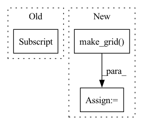

Pattern ID :40601

Before Change
pl_module.eval()
out = pl_module(text, x, return_loss=False).long()
print(out.shape)
text_seq = out[:, :self.text_seq_len,:]
print(text_seq.shape)
img_seq = out[:, self.text_seq_len:,:]
print(img_seq.shape)
xrec = pl_module.vae.decode(img_seq, feed_seq=True)
After Change
scale_each=self.scale_each,
pad_value=self.pad_value,
)
xgen_grid = torchvision.utils.make_grid(
tensor=x_gen,
nrow=self.nrow,
padding=self.padding,
normalize=self.normalize,
value_range=self.norm_range,
scale_each=self.scale_each,
pad_value=self.pad_value,
)
text_title = "train/text"
trainer.logger.experiment.add_text(text_title, decoded_text, global_step=trainer.global_step)
x_title = "train/input"
In pattern: SUPERPATTERN
Frequency: 3
Non-data size: 3
Instances
Fragment ID: 114824569
Project Name: tgisaturday/dalle-lightning
Commit Name: 2581c994940a3ccb5d297681ac847d543a1a82bd
Time: 2021-07-26
Author: jamesk1228@gmail.com
File Name: pl_dalle/callbacks.py
M Class Name: DalleImageSampler
N Class Name: DalleImageSampler
M Method Name: on_train_batch_end(7)
N Method Name: on_train_batch_end(7)
M Parent Class: Callback
N Parent Class: Callback
M File Name: pl_dalle/callbacks.py
N File Name: pl_dalle/callbacks.py
M Start Line: 206
M End Line: 216
N Start Line: 206
N End Line: 261
'>
Before Change
sample = random.sample(list(misclassified_dictionary), num_of_images+1)
for i in range(1, col*row +1):
if is_dicom:
img = dicom_to_narray(sample[i])
else:
img = Image.open(sample[i]).convert("RGB")
fig.add_subplot(row, col, i)
After Change
// fig.add_subplot(row, col, i)
// plt.imshow(img)
// plt.axis("off")
grid = torchvision.utils.make_grid(imgs, nrow=row)
plt.figure(figsize=(figure_size))
plt.imshow(np.transpose(grid, (1,2,0)))
// plt.show()
'>
Fragment ID: 114824570
Project Name: radtorch/radtorch
Commit Name: 38b79ed252a06e004967e7c8d8f71e98d6c5147e
Time: 2020-03-08
Author: elbanan@users.noreply.github.com
File Name: radtorch/visutils.py
M Class Name: AnonimousClass
N Class Name: AnonimousClass
M Method Name: show_misclassified(4)
N Method Name: show_misclassified(4)
M Parent Class:
N Parent Class:
M File Name: radtorch/visutils.py
N File Name: radtorch/visutils.py
M Start Line: 41
M End Line: 53
N Start Line: 44
N End Line: 62
'>
Before Change
pl_module.eval()
out = pl_module(text, x, return_loss=False).long()
text_seq = out[:, :self.text_seq_len]
img_seq = out[:, -self.image_seq_len:]
xrec = pl_module.vae.decode(img_seq, feed_seq=True)
pl_module.train()
After Change
scale_each=self.scale_each,
pad_value=self.pad_value,
)
xgen_grid = torchvision.utils.make_grid(
tensor=x_gen,
nrow=self.nrow,
padding=self.padding,
normalize=self.normalize,
value_range=self.norm_range,
scale_each=self.scale_each,
pad_value=self.pad_value,
)
text_title = "val/text"
trainer.logger.experiment.add_text(text_title, decoded_text, global_step=trainer.global_step)
x_title = "val/input"
'>
Fragment ID: 114824571
Project Name: tgisaturday/dalle-lightning
Commit Name: 2581c994940a3ccb5d297681ac847d543a1a82bd
Time: 2021-07-26
Author: jamesk1228@gmail.com
File Name: pl_dalle/callbacks.py
M Class Name: DalleImageSampler
N Class Name: DalleImageSampler
M Method Name: on_validation_batch_end(7)
N Method Name: on_validation_batch_end(7)
M Parent Class: Callback
N Parent Class: Callback
M File Name: pl_dalle/callbacks.py
N File Name: pl_dalle/callbacks.py
M Start Line: 263
M End Line: 270
N Start Line: 276
N End Line: 331